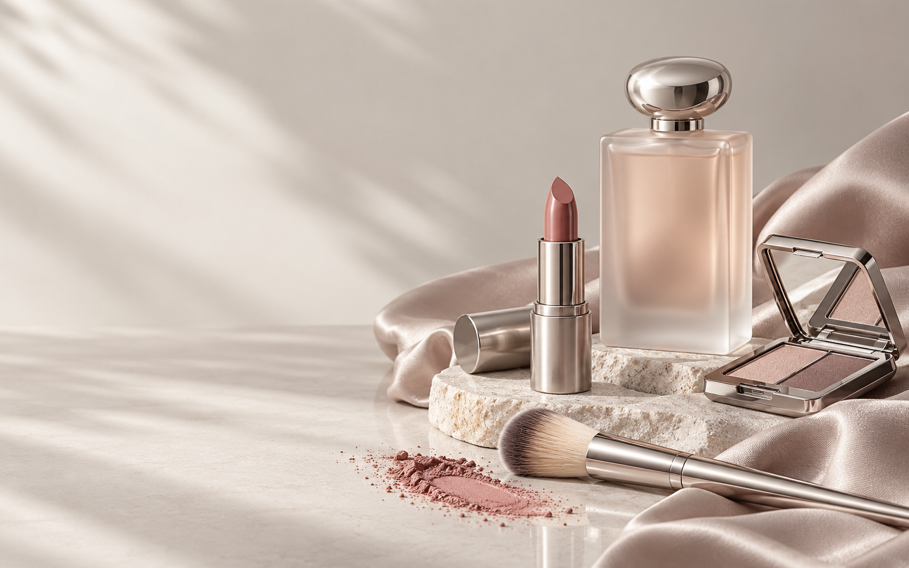

选择条件后生成第一套方案。

原创 AI 生成艺术静物 · 非品牌商品广告
01 / PERSONAL
完整色域，自由偏好，可靠资料。
SCROLL TO DISCOVERTHE ATELIER
从认识自己开始
NOT MORE. MORE YOURS.
“美没有唯一色谱，好的建议应当尊重你的选择。”
产品数据库、个人偏好和推荐规则彼此独立。你的档案只影响自己的结果。
BEAUTY PROFILE
我的美妆档案
图例只帮助辨认结构，不评价哪一种特征更美。“不确定”同样有效。
PROFESSIONAL FINDER
专属甄选
先选大类与具体类别，再设置颜色、质地、包装、肤况和预算。临时筛选不会修改档案。
YOUR BEAUTY WARDROBE
我的化妆包
PHOTO INTAKE
拍照 · 批量整理
照片只在本机预览，再由你确认资料。
MAKEUP ATELIER
妆容工作室
先确定产品与参考色，再生成对应视觉和步骤。
AI 模拟妆容教学示意图产品资料色板
ARCHIVE
已保存方案
BEAUTY FOUNDATION
新手美妆学院
MINIMAL KIT
我的最小化妆包
7 LESSONS
循序渐进课程
SHOP WITH CLARITY
购物指南
AUTHENTICITY CHECK
购买检查清单
- 优先品牌官网、授权零售商或线下专柜
- 核对名称、色号、容量与退换政策
- 价格和配方在购买当日再次核实
- 屏幕颜色不能代替实物试色
本地数据备份
导出档案、化妆包与方案。